Every rescued animals has a tory-one of hope,love and second chances🐾
Bustana Kucing Perlis adalah sebuah pusat haiwan peliharaan yang terletak di Sungai Batu Pahat, 02400 Kangar, Perlis, Malaysia. Kami menawarkan pelbagai produk dan perkhidmatan untuk kucing dan anjing, termasuk makanan, aksesori, dan rawatan kesihatan. Bustana Kucing Perlis ditubuhkan oleh Encik Mohd Taufik bin Md Zain bersama pengasas bersama Puan Noor Azlina bt Abu Bakar, Dr. Thomas Jong Ah Khaw, dan Haixiey Majibon.
Program Purr-Fect Care By Si Comot Bantu 3000 Ekor Kucing Di Perlis- Program tanggungjawab sosial korporat (CSR), Purr-Fect Care by Si Comot yang dianjurkan oleh Powercat dengan kerjasama Kelab Khidmat Masyarakat UniMAP, telah berlangsung dengan jayanya di Bustana Kucing Perlis.Program ini bertujuan membantu lebih daripada 3,000 ekor kucing yang berada di bawah jagaan pusat perlindungan tersebut. Sebagai tanda sokongan, pihak Si Comot by Powercat telah menyumbangkan sebanyak 800kg makanan kucing serta pelbagai peralatan keperluan harian untuk digunakan oleh pihak Bustana Kucing Perlis. Program ini turut disertai oleh para pelajar dari Kelab Khidmat Masyarakat UniMAP yang hadir membantu membersihkan dan menyusun semula kawasan shelter, sebagai tanda prihatin terhadap kebajikan haiwan terbiar.
013-4300443 (En. Mohd Taufik bin Md Zain)
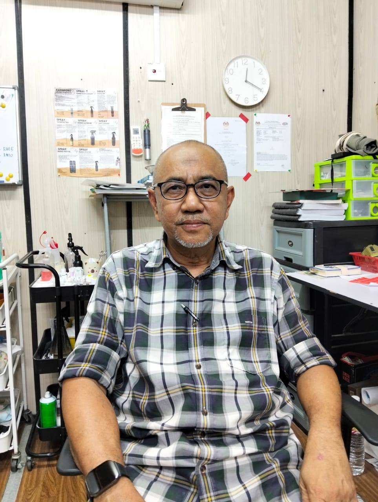
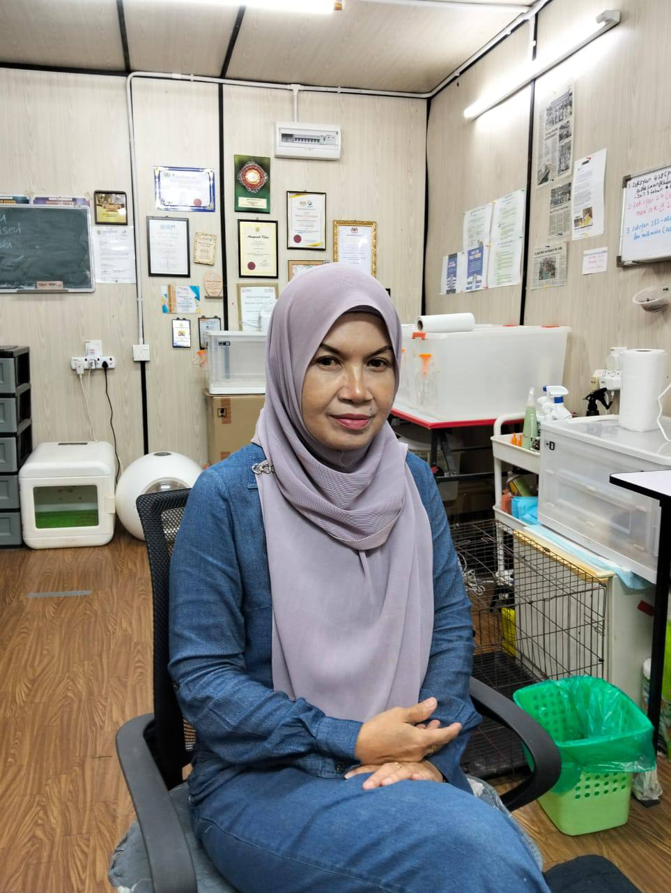
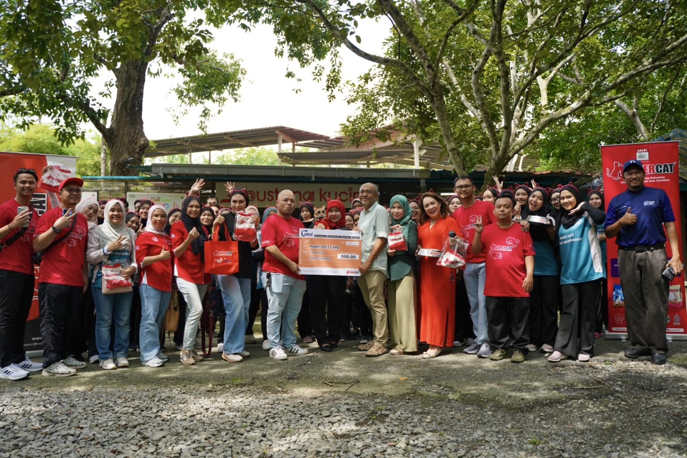
Dengan bayaran kecil (bermula sekitar RM30), orang awam boleh mengadopsi kucing. Bayaran ini membantu pusat perlindungan menambah dana untuk makanan dan ubat-ubatan. Kami juga berusaha mendidik orang awam mengenai pemilikan haiwan peliharaan yang bertanggungjawab dan kepentingan menjaga haiwan jalanan. Akhir sekali, pusat perlindungan ini menawarkan peluang kepada pencinta haiwan untuk menyumbangkan masa dan tenaga mereka bagi membantu menguruskan populasi kucing.
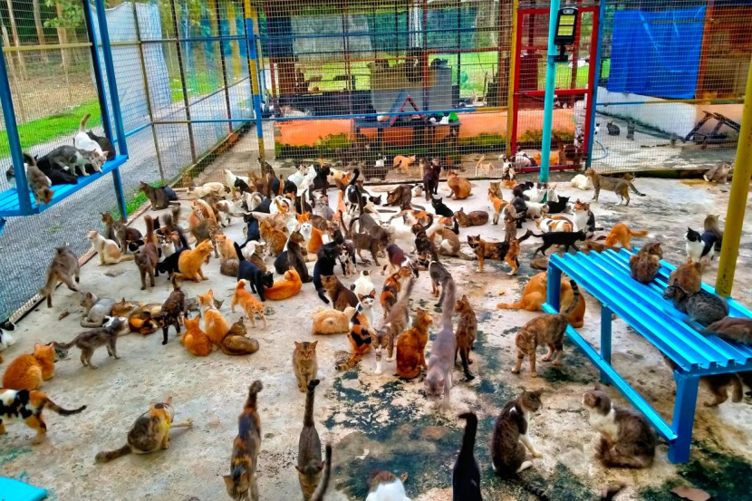
Kami menyediakan tempat perlindungan selamat untuk hampir 2,000 kucing liar dan yang ditinggalkan, serta beberapa burung dan ayam. Pemilik yang tidak lagi dapat menjaga kucing mereka boleh menyerahkan kucing tersebut kepada shelter dengan bayaran (biasanya RM50 untuk kucing biasa dan RM100 untuk kucing yang mengandung) untuk membantu menampung kos penjagaan jangka panjang dan makanan.
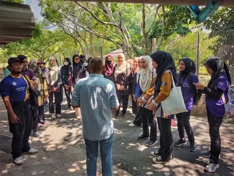
Kemudahan ini merangkumi kawasan untuk merawat kucing yang sakit atau cedera. Kami menguruskan penyakit kucing yang biasa dan menyediakan penjagaan rapi untuk keadaan serius seperti sporotrichosis dan parvovirus. Selain itu, terdapat pasukan kakitangan dan sukarelawan yang berdedikasi untuk mengendalikan pembersihan sangkar dan rutin pemakanan harian bagi memastikan persekitaran yang bersih.
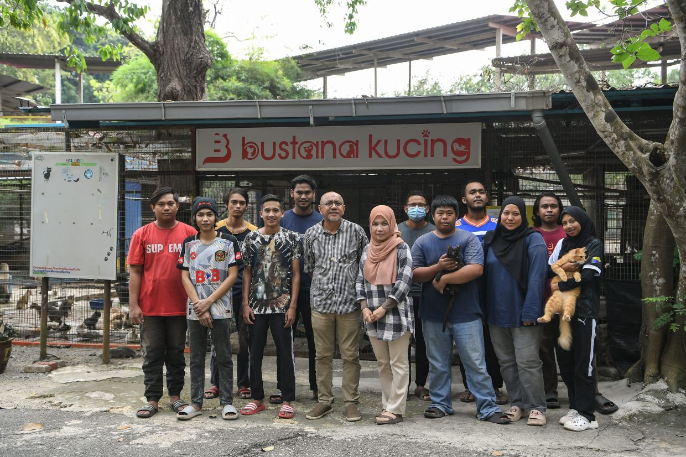
1. Klinik Haiwan Purrfect, Bandar Darulaman, Jitra Kedah. (Dr. Zafiyah
2. Klinik Haiwan Sanctuary, Kangar Jaya, Kangar, Perlis. (Dr. Ling)
3. Klinik Haiwan Tuah, Padang Serai, Kulim, Kedah. (Dr. Shahzani)
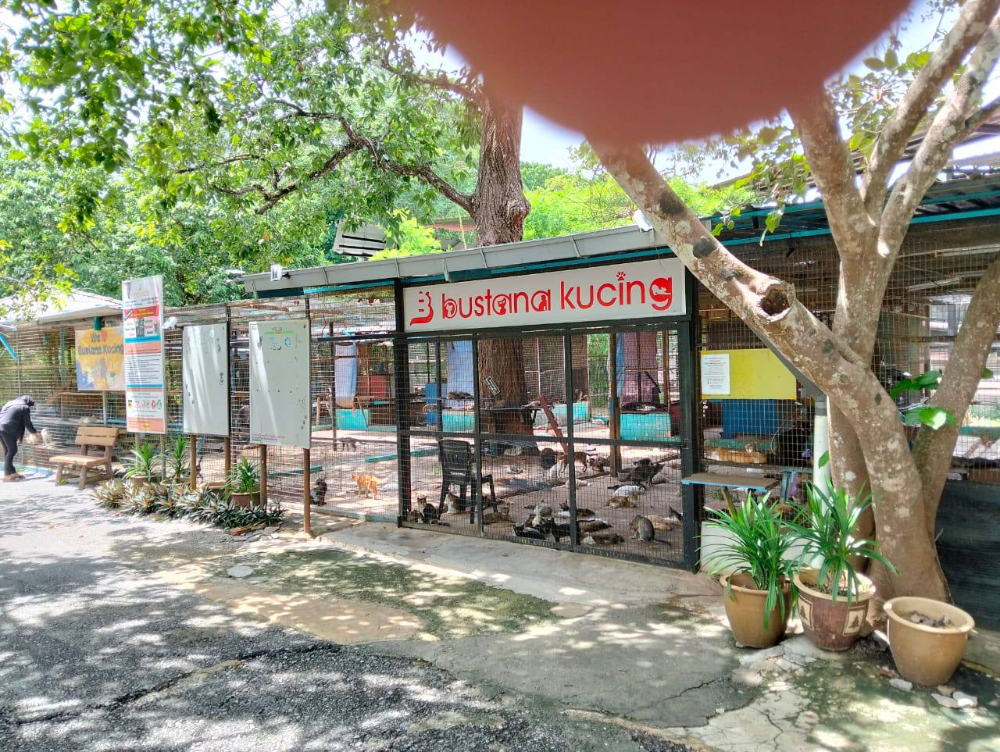
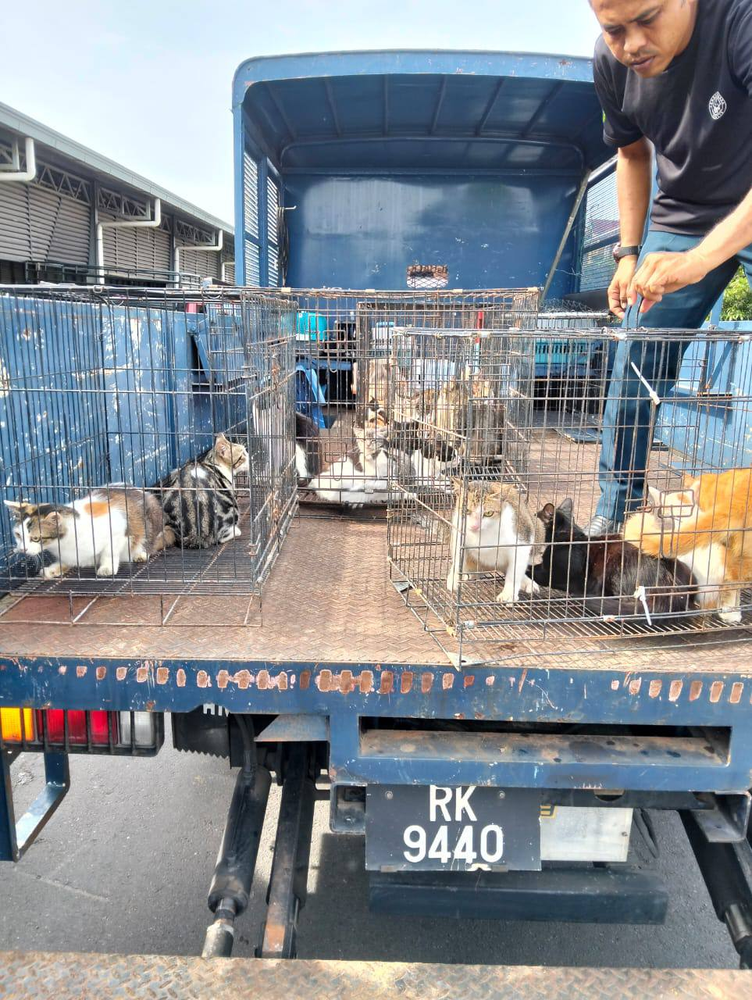
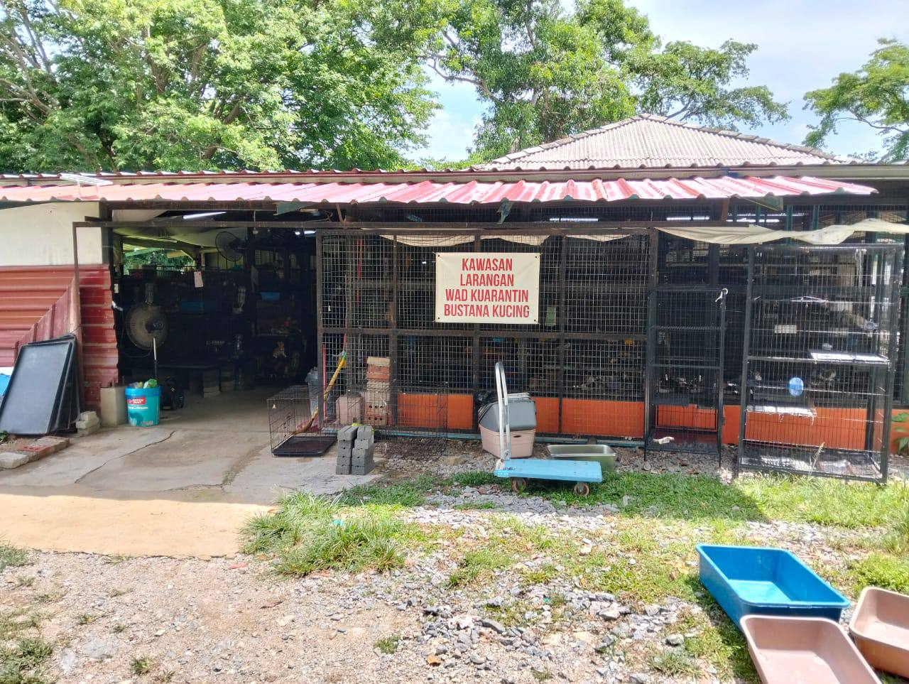
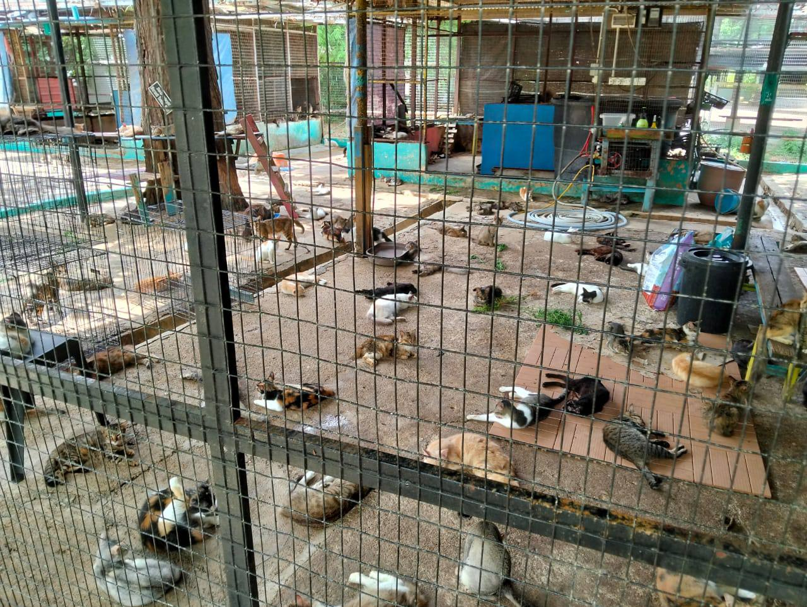
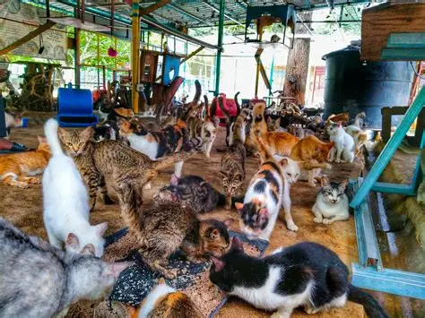